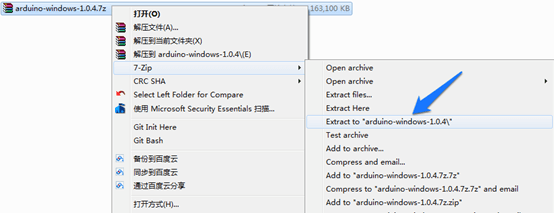
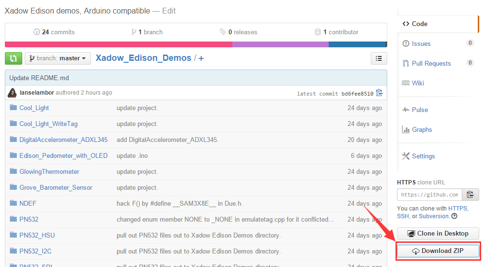

The Xadow - Edison is based on the Intel® Edison which is designed to lower the barriers to entry for anyone prototyping and producing IoT and wearable computing products. It features high performance and low power consumption, which makes your project small and portable, especially suitable for wearable projects. Xadow - Edison includes two Xadow-compatible interfaces, one SD interface, one Programmer interface and one Battery interface.With Xadow - Edison you will be able to use many Xadow modules via standard Xadow interface.
Using FFC Cables making the following connections:
Note: when connecting other Xadow modules to Xadow - Edison, you should concern about the connection direction. The connection method is that the unfilled corner of one xadow module need to connect to the right angle of another module(see four corners of each xadow module).
Refer to Intel Edison offical site: Edison Getting Started Guide
1. Download the Edison Arduino IDE.(Note: Select your OS.)
2. Navigate to the folder where you downloaded the .zip Edison Arduino IDE
3. Right click on the .7z file,highlight “7-zip”, and select “Extract to “arduino-…”

4. Click through the folder that was created until you see the IDE “arduino.exe” file.Double-click this file and this window should open.
1. Download FTDI drivers 2. Right-click the .exe file you downloaded, which should be called “CDM…” and select “Run as administrator”.

3. Click “Extract”.

4. Click “Next”. 5. Click “Finish” when you see this screen.

6. Download Intel Edison Drivers to install the required RNDIS, CDC, and DFU drivers. 7. Double-click the .exe file to begin the install.

1. Open the web site: Xadow_Edison_Demos to download the whole project.

2. Click Tools > Serial Port and select the Com # that the Intel Edison is connected to

3. Click Sketch>Import Library…>Add Library and import the library downloaded at step 1
4. Click File > Examples > Xadow_Edison_Demos > Edison_Pedometer_with_OLED and select the demo
5. Using FFC Cables making the following connections:
6. Click upload icon
If you have questions or other better design ideas, you can go to our forum or wish to discuss.
Copyright (c) 2008-2016 Seeed Development Limited (www.seeedstudio.com / www.seeed.cc)